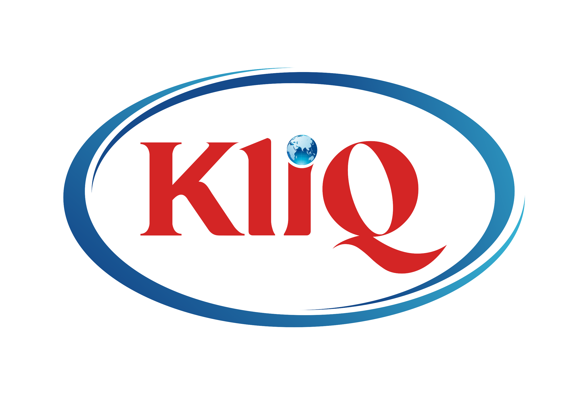

<mat-nav-list>
 <!-- <div class="myfonts" class="profile-card">
    <div class="myfonts">
      <h2>
      KLIQ
      </h2>
    </div>
    

  </div>

  <mat-divider></mat-divider>
  <div class="card text-center">
    <div class="card-header">
  <h4 matSubheader>Pages</h4>
  </div> </div>  -->

<br>

  <div class="myfonts" *ngFor="let i of pages">

    <ul class="shadow-sm card-header-tabs">

      <li class=" nav-item">
        <a class="nav-link " mat-list-item routerLinkActive="list-item-active" routerLink="{{i.path}}"><mat-icon >{{i.icon}}</mat-icon>{{i.screenname}}</a>
        <div class="form-check form-switch">
          <input class="form-check-input" type="checkbox" role="switch" id="flexSwitchCheckDefault"  (change)="screens($event)">

        </div>
      </li>


      </ul>
      </div>


<br>
</mat-nav-list>

